library(dplyr)
library(ggplot2)
library(moderndive)
library(infer)
library(volcanoes)
mu <- mean(volcanoes$elevation, na.rm = TRUE)
sigma <- sd(volcanoes$elevation, na.rm = TRUE)
p_strato <- mean(volcanoes$primary_volcano_type == "Stratovolcano",
na.rm = TRUE)Solutions for the end-of-chapter exercises in Chapter 7 — Sampling. Primary dataset: volcanoes from volcanoes; secondary: eruptions (same package) and planets from exoplanets.
TipSection coverage at a glance
Exercises per section — count of prompts that touch each book section.
| Book section | # of exercises |
|---|---|
| 7.1 First activity: red balls | 12 |
| 7.2 Sampling framework | 1 |
| 7.3 The Central Limit Theorem | 8 |
| 7.5 Sampling distribution in other scenarios | 4 |
| Critical thinking / synthesis / open exploration | 9 |
Exercises by subsection — which prompts target each finer-grained subsection.
| Subsection | Exercises |
|---|---|
| 7.1.1 Population statistics (\(\mu\), \(\sigma\), \(p\)) | EX7.1, EX7.2, EX7.3, EX7.4 |
| 7.1.2 Manual sampling / a single sample | EX7.5, EX7.6, EX7.7 |
| 7.1.3 Virtual sampling / sampling distribution | EX7.8, EX7.9, EX7.10, EX7.11, EX7.12 |
| 7.2 Sampling framework (terminology and notation) | EX7.13 |
| 7.3 Central Limit Theorem (sample mean) | EX7.14, EX7.15, EX7.16, EX7.17 |
| 7.3.4 Sampling distribution of the sample proportion | EX7.18, EX7.19, EX7.20, EX7.21 |
| 7.5 Other populations (one-sample mean — eruptions, planets) | EX7.22, EX7.23, EX7.24 |
| 7.5.1 Sampling distribution for two samples (difference) | EX7.25 |
| Critical thinking / synthesis / open exploration | EX7.26, EX7.27, EX7.28, EX7.29, EX7.30, EX7.31, EX7.32, EX7.33, EX7.34 |
A note on coverage. Section 7.4 (the chocolate-almond activity for the sample mean) appears 0 here, but the volcano-elevation exercises EX7.5–EX7.17 deliberately mirror the same structure on a different population — single sample, virtual replicates, sampling distribution, CLT — so 7.4 is implicitly exercised throughout the chapter. EX7.13 makes the terminology of Section 7.2 (parameters vs. statistics, populations vs. random variables) explicit, and EX7.25 covers the two-sample subsection (7.5.1).
Difficulty: ★ warm-up · ★★ standard · ★★★ critical thinking.
Setup and population statistics
NoteEX7.1 — show question
EX7.1 (★) Run glimpse(volcanoes). How many rows and columns? Treat this as the population of Holocene volcanoes.
Solution (reference: Section 7.1 “First activity: red balls”, population concept).
~1,200 rows × 13 columns; this is our population for the rest of the chapter.
dim(volcanoes)[1] 1215 19
NoteEX7.2 — show question
EX7.2 (★) Compute the population mean elevation \(\mu\) and the population standard deviation \(\sigma\).
Solution (reference: Section 7.4.3 “The center of the distribution: the expected value”).
c(mu = mu, sigma = sigma) mu sigma
1676.235 1637.563
NoteEX7.3 — show question
EX7.3 (★) What proportion of the population are Stratovolcano type? Save it as p_strato.
Solution (reference: Section 7.1.1 “The proportion of red balls in the bowl”, population proportion).
p_strato[1] 0.4538715About 60–65% of Holocene volcanoes are stratovolcanoes (the iconic conical type).
NoteEX7.4 — show question
EX7.4 (★★) Plot a histogram of the population’s elevation. Is the distribution roughly normal, skewed, or multi-modal?
Solution (reference: Section 2.5 “Histograms”, connecting EDA to sampling).
Right-skewed — most volcanoes are at modest elevations, with a long tail of high-altitude stratovolcanoes (Andes, Japan).
ggplot(volcanoes, aes(x = elevation)) +
geom_histogram(bins = 30) +
labs(x = "Elevation (m)")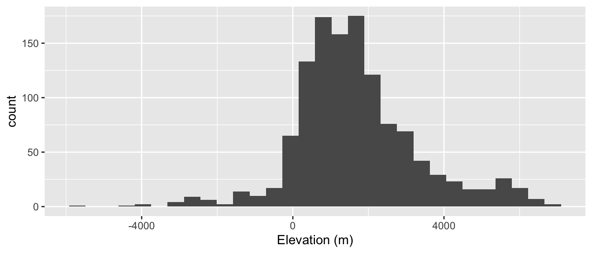
A single sample
NoteEX7.5 — show question
EX7.5 (★★) Take a single random sample of size \(n = 30\) from volcanoes. Compute \(\bar{x}\) (sample mean elevation). How close is it to \(\mu\)?
Solution (reference: Section 7.1.2 “Manual sampling”).
set.seed(76)
volcanoes |>
rep_slice_sample(n = 30, reps = 1) |>
summarize(xbar = mean(elevation, na.rm = TRUE))# A tibble: 1 × 2
replicate xbar
<int> <dbl>
1 1 846.The sample mean is near but not exactly equal to \(\mu\).
NoteEX7.6 — show question
EX7.6 (★★) Repeat EX7.5 with set.seed(2026) instead. Did \(\bar{x}\) change? Why? What is this variation called?
Solution (reference: Section 7.4.4 “Sampling variation”, concept of sampling variation).
Each sample is a random subset; different draws yield different sample means. This is sampling variation — and it’s what motivates the sampling distribution.
set.seed(2026)
volcanoes |>
rep_slice_sample(n = 30, reps = 1) |>
summarize(xbar = mean(elevation, na.rm = TRUE))# A tibble: 1 × 2
replicate xbar
<int> <dbl>
1 1 1549.
NoteEX7.7 — show question
EX7.7 (★) A peer claims “if my sample mean differs from the population mean, my sample is biased.” Refute this in 2 sentences using the chapter’s definitions.
Solution (reference: Section 7.2 “Sampling framework”, bias vs variance).
Disagree. Bias is a systematic tendency — present when the sampling procedure favors certain values. A single \(\bar{x}\) deviating from \(\mu\) is sampling variation, not bias. With many random samples, the mean of \(\bar{x}\) values does equal \(\mu\) — even though any one sample’s mean does not.
Building the sampling distribution
NoteEX7.8 — show question
EX7.8 (★★) Take 1,000 samples of size \(n = 30\) from volcanoes. Compute \(\bar{x}\) for each, save the result as samp_dist_30. Then plot a histogram.
Solution (reference: Section 7.1.3 “Virtual sampling”).
set.seed(76)
samp_dist_30 <- volcanoes |>
rep_slice_sample(n = 30, reps = 1000) |>
group_by(replicate) |>
summarize(xbar = mean(elevation, na.rm = TRUE), .groups = "drop")
ggplot(samp_dist_30, aes(x = xbar)) +
geom_histogram(bins = 30) +
geom_vline(xintercept = mu, color = "red", linetype = 2) +
labs(x = expression(bar(x)), title = "Sampling distribution, n = 30")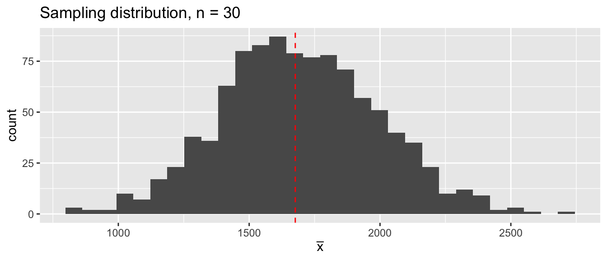
NoteEX7.9 — show question
EX7.9 (★★) Compute the center (mean) and standard deviation of samp_dist_30. The latter is the standard error. How does the center compare to \(\mu\)?
Solution (reference: Section 7.4.4 “Sampling variation: standard deviation and standard error”).
Center ≈ \(\mu\) (CLT); SD of \(\bar{x}\) is the standard error.
samp_dist_30 |>
summarize(center = mean(xbar), SE = sd(xbar), mu = mu)# A tibble: 1 × 3
center SE mu
<dbl> <dbl> <dbl>
1 1693. 300. 1676.
NoteEX7.10 — show question
EX7.10 (★★) Repeat EX7.8 for \(n = 100\) instead. Plot both samp_dist_30 and samp_dist_100 on the same chart with facet_wrap(). Which is narrower?
Solution (reference: Section 7.4.4 “Sampling variation: standard deviation and standard error”, \(n\) effect).
The \(n=100\) distribution is narrower — bigger samples give more precise estimates.
set.seed(76)
samp_dist_100 <- volcanoes |>
rep_slice_sample(n = 100, reps = 1000) |>
group_by(replicate) |>
summarize(xbar = mean(elevation, na.rm = TRUE), .groups = "drop")
bind_rows(
samp_dist_30 |> mutate(n = "n = 30"),
samp_dist_100 |> mutate(n = "n = 100")
) |>
ggplot(aes(x = xbar)) +
geom_histogram(bins = 30) +
facet_wrap(~ n, ncol = 1)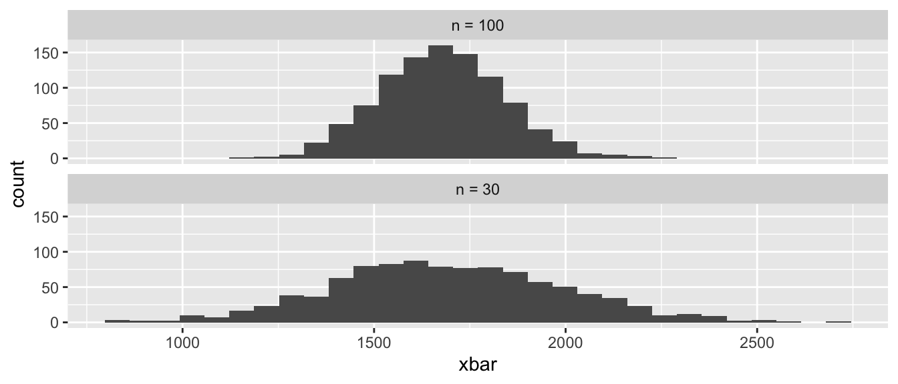
NoteEX7.11 — show question
EX7.11 (★★) Compute the SE for \(n = 100\). By what factor did SE shrink going from \(n = 30\) to \(n = 100\)? Compare with \(\sqrt{30/100}\) (the theoretical CLT prediction).
Solution (reference: Section 7.4 “Central Limit Theorem”, CLT scaling).
SE_30 <- sd(samp_dist_30$xbar)
SE_100 <- sd(samp_dist_100$xbar)
c(SE_30 = SE_30, SE_100 = SE_100,
ratio = SE_100 / SE_30,
theory = sqrt(30 / 100)) SE_30 SE_100 ratio theory
300.0951867 161.2078127 0.5371889 0.5477226 The simulated ratio matches \(\sqrt{n_1/n_2}\) — exactly the CLT prediction.
NoteEX7.12 — show question
EX7.12 (★★★) Run the same experiment for \(n \in \{10, 30, 100, 300\}\) and collect the resulting SE values into a small data frame with columns n and SE. Plot SE (y) vs n (x) — you should see the SE shrinking as \(n\) grows. Sanity-check against the \(1/\sqrt{n}\) pattern from § 7.4.3 by confirming that moving from \(n = 30\) to \(n = 300\) (a 10× jump) shrinks the SE by roughly \(\sqrt{10} \approx 3.16\).
Solution (reference: Section 7.4 “Central Limit Theorem”).
set.seed(76)
ns <- c(10, 30, 100, 300)
ses <- sapply(ns, function(nn) {
volcanoes |>
rep_slice_sample(n = nn, reps = 500) |>
group_by(replicate) |>
summarize(xbar = mean(elevation, na.rm = TRUE), .groups = "drop") |>
summarize(SE = sd(xbar)) |>
pull(SE)
})
se_table <- data.frame(n = ns, SE = ses)
se_table n SE
1 10 508.96312
2 30 296.21005
3 100 162.99062
4 300 80.50384ggplot(se_table, aes(x = n, y = SE)) +
geom_point() + geom_line() +
labs(title = "SE shrinks as n grows (1/sqrt(n) pattern)")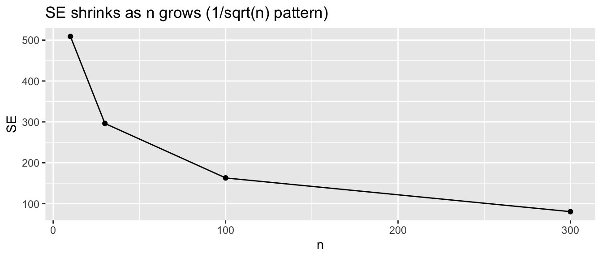
# Sanity check: SE at n=30 should be roughly sqrt(10) times the SE at n=300
se_table$SE[se_table$n == 30] / se_table$SE[se_table$n == 300][1] 3.679452The ratio of SE(n = 30) to SE(n = 300) is close to \(\sqrt{10} \approx 3.16\) — exactly what § 7.4.3’s \(1/\sqrt{n}\) formula predicts.
Sampling framework
NoteEX7.13 — show question
EX7.13 (★) Match each term in (a)–(e) to one of two labels: “a single fixed number for the population” or “a random variable that depends on which sample you happened to draw”. Then state the symbol the book uses for each.
- population mean of elevations
- sample mean of elevations from a fresh draw of \(n=30\) volcanoes
- population proportion of stratovolcanoes
- sample proportion of stratovolcanoes from a fresh draw
- the standard error of the sample mean
Solution (reference: Section 7.2 “Sampling framework”, terminology and notation).
| Term | Type | Symbol |
|---|---|---|
| (a) Population mean of elevations | fixed number (a parameter) | \(\mu\) |
| (b) Sample mean from a fresh draw of 30 volcanoes | random variable (a statistic) | \(\bar{x}\) |
| (c) Population proportion of stratovolcanoes | fixed number (a parameter) | \(p\) |
| (d) Sample proportion from a fresh draw | random variable (a statistic) | \(\hat{p}\) |
| (e) Standard error of the sample mean | fixed number for a given \(n\) — it is the standard deviation of the random variable in (b) | \(\text{SE}(\bar{x}) = \sigma/\sqrt{n}\) |
The key dichotomy: populations have parameters (Greek letters, fixed); samples have statistics (Roman letters with hats or bars, random across draws). The sampling distribution is the probability distribution of those random statistics across all possible samples.
The Central Limit Theorem
NoteEX7.14 — show question
EX7.14 (★★★) Even though elevation is heavily right-skewed (population), samp_dist_30 looks roughly normal. Explain in 2 sentences why — invoking the CLT.
Solution (reference: Section 7.4 “The Central Limit Theorem”).
The CLT says: regardless of the population’s shape, the sampling distribution of \(\bar{x}\) approaches normality as \(n\) grows. By \(n = 30\), even a fairly skewed population yields a roughly bell-shaped sampling distribution.
NoteEX7.15 — show question
EX7.15 (★★★) Build the population histogram and samp_dist_30 histogram on the same panel for visual comparison. Use patchwork if helpful.
Solution (reference: Section 7.4 “The Central Limit Theorem”).
The population is right-skewed; the sampling distribution of \(\bar{x}\) is roughly bell-shaped — the CLT in action.
library(patchwork)
p_pop <- ggplot(volcanoes, aes(x = elevation)) +
geom_histogram(bins = 30) + labs(title = "Population")
p_sd <- ggplot(samp_dist_30, aes(x = xbar)) +
geom_histogram(bins = 30) + labs(title = "Sampling dist of x̄, n = 30")
p_pop / p_sd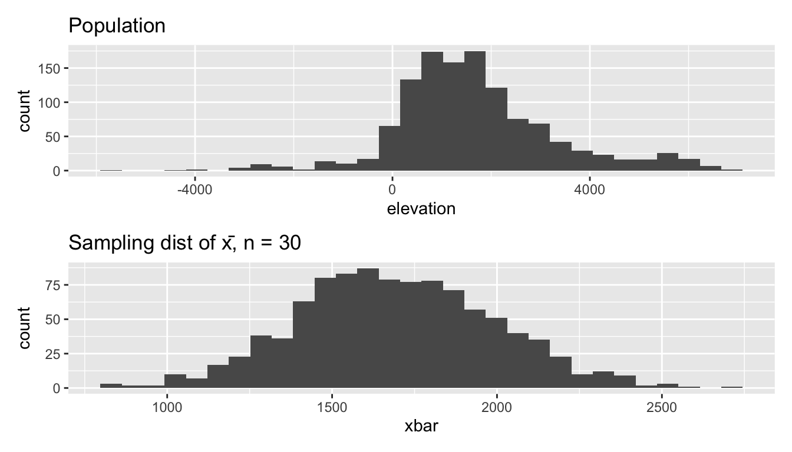
NoteEX7.16 — show question
EX7.16 (★★★) Compute the theoretical SE under the CLT: \(\sigma / \sqrt{n}\) for \(n = 30\). Compare to the simulated SE from EX7.9. They should match closely.
Solution (reference: Section 7.4.4 “Sampling variation: standard deviation and standard error”).
c(theoretical = sigma / sqrt(30),
simulated = sd(samp_dist_30$xbar))theoretical simulated
298.9767 300.0952 Match within simulation noise.
NoteEX7.17 — show question
EX7.17 (★★★) What’s the smallest \(n\) for which the sampling distribution of \(\bar{x}\) already looks roughly bell-shaped? (Try \(n = 5\), \(10\), \(30\) — eyeball the histograms.)
Solution (reference: Section 7.4 “The Central Limit Theorem”, convergence).
Answers vary. For elevation (modestly skewed), even \(n = 10\) looks roughly bell-shaped at the center, with thicker tails. By \(n = 30\) the bell is clean.
set.seed(76)
sd_5 <- volcanoes |>
rep_slice_sample(n = 5, reps = 1000) |>
group_by(replicate) |>
summarize(xbar = mean(elevation, na.rm = TRUE), .groups = "drop")
ggplot(sd_5, aes(x = xbar)) + geom_histogram(bins = 30) +
labs(title = "n = 5 — clearly skewed still")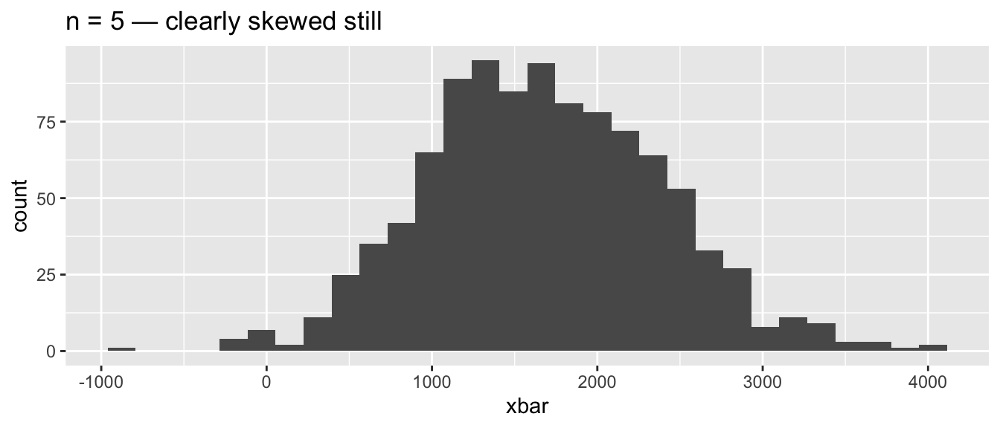
Sampling distribution for a proportion
NoteEX7.18 — show question
EX7.18 (★★) Take 1,000 samples of size \(n = 50\) and compute \(\hat{p}\) (sample proportion Stratovolcano) for each. Plot the histogram.
Solution (reference: Section 7.1.3 “Virtual sampling”, proportion variant).
set.seed(76)
samp_p <- volcanoes |>
filter(!is.na(primary_volcano_type)) |>
rep_slice_sample(n = 50, reps = 1000) |>
group_by(replicate) |>
summarize(phat = mean(primary_volcano_type == "Stratovolcano"),
.groups = "drop")
ggplot(samp_p, aes(x = phat)) +
geom_histogram(bins = 25) +
geom_vline(xintercept = p_strato, color = "red", linetype = 2)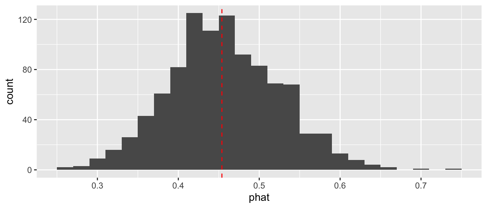
NoteEX7.19 — show question
EX7.19 (★★) Compute the simulated mean and SE of \(\hat{p}\). Compare the simulated SE to the theoretical \(\sqrt{p(1-p)/n}\) using p_strato from EX7.3.
Solution (reference: Section 7.4.4 “Sampling variation: standard deviation and standard error”, $\sqrt{p(1-p).
c(simulated = sd(samp_p$phat),
theoretical = sqrt(p_strato * (1 - p_strato) / 50)) simulated theoretical
0.06939868 0.07040911
NoteEX7.20 — show question
EX7.20 (★★★) What happens to the shape of the sampling distribution if you set \(n = 5\) instead? Build it and comment.
Solution (reference: Section 7.4 “The Central Limit Theorem”, small-\(n\) failure).
With \(n = 5\), \(\hat{p}\) can only take values \(\{0, 0.2, 0.4, 0.6, 0.8, 1\}\) — the histogram has visible spikes (no longer continuous-looking) and the CLT approximation is poor.
set.seed(76)
samp_p_5 <- volcanoes |>
filter(!is.na(primary_volcano_type)) |>
rep_slice_sample(n = 5, reps = 1000) |>
group_by(replicate) |>
summarize(phat = mean(primary_volcano_type == "Stratovolcano"),
.groups = "drop")
ggplot(samp_p_5, aes(x = phat)) + geom_histogram(bins = 6)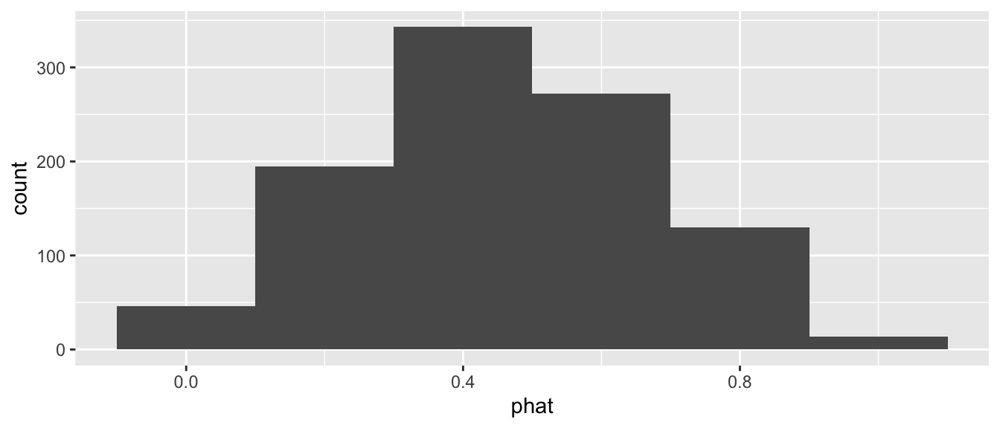
NoteEX7.21 — show question
EX7.21 (★★★) When the population proportion is very small (e.g., a rare volcano type — try "Caldera"), the sampling distribution can look notably skewed even at \(n = 50\). Demonstrate with one chart and one sentence.
Solution (reference: Section 7.4 “The Central Limit Theorem”, small \(p\) regime).
When \(p\) is near 0 or 1, even moderately large \(n\) gives a skewed sampling distribution — the CLT requires both large \(n\) AND \(np(1-p)\) not too small.
set.seed(76)
samp_p_caldera <- volcanoes |>
filter(!is.na(primary_volcano_type)) |>
rep_slice_sample(n = 50, reps = 1000) |>
group_by(replicate) |>
summarize(phat = mean(primary_volcano_type == "Caldera"),
.groups = "drop")
ggplot(samp_p_caldera, aes(x = phat)) + geom_histogram(bins = 25)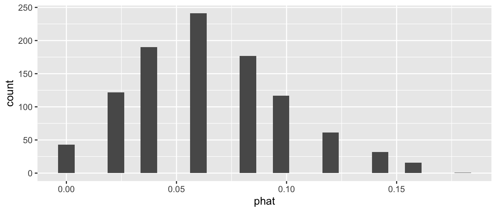
Sampling on eruptions and planets
NoteEX7.22 — show question
EX7.22 (★★★) Treat volcanoes::eruptions as a population (one row per recorded eruption, with vei). What’s the population mean vei?
Solution (reference: Section 7.1.1 “The proportion of red balls in the bowl”, different population).
mean(eruptions$vei, na.rm = TRUE)[1] 1.941625
NoteEX7.23 — show question
EX7.23 (★★★) Take 1,000 samples of size \(n = 50\) from eruptions and build the sampling distribution of mean vei. SE?
Solution (reference: Section 7.1.3 “Virtual sampling”).
set.seed(76)
samp_vei <- eruptions |>
filter(!is.na(vei)) |>
rep_slice_sample(n = 50, reps = 1000) |>
group_by(replicate) |>
summarize(xbar = mean(vei, na.rm = TRUE), .groups = "drop")
ggplot(samp_vei, aes(x = xbar)) + geom_histogram(bins = 30)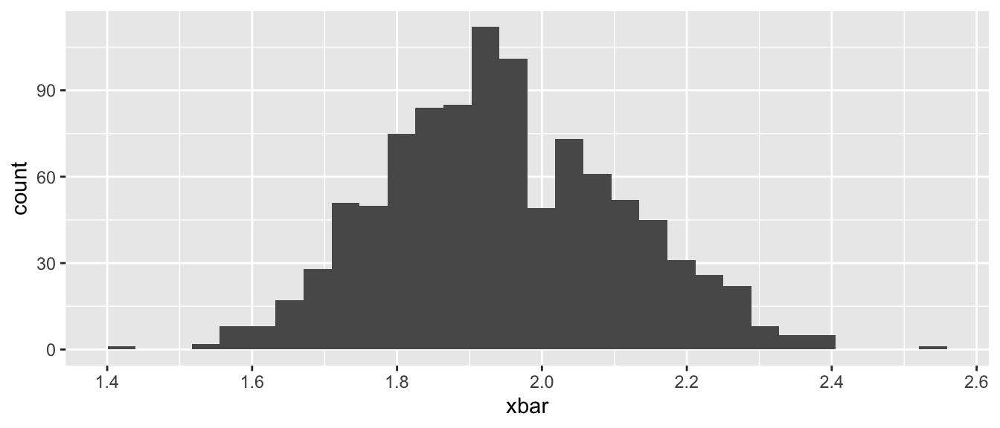
sd(samp_vei$xbar)[1] 0.1626475
NoteEX7.24 — show question
EX7.24 (★★★) Treat exoplanets::planets$radius_earth as a population. The distribution is heavily right-skewed. Take 1,000 samples of \(n = 30\) and 1,000 of \(n = 200\) — compare the sampling distributions visually.
Solution (reference: Section 7.4 “The Central Limit Theorem”, \(n\) effect on heavy-skew populations).
The exoplanet radius distribution has much heavier tails than volcano elevations, so \(n = 30\) may still look skewed. By \(n = 200\), it’s much closer to bell-shaped.
library(exoplanets)
set.seed(76)
samp_30 <- planets |> filter(!is.na(radius_earth)) |>
rep_slice_sample(n = 30, reps = 500) |>
group_by(replicate) |>
summarize(xbar = mean(radius_earth), .groups = "drop") |>
mutate(n = "n = 30")
samp_200 <- planets |> filter(!is.na(radius_earth)) |>
rep_slice_sample(n = 200, reps = 500) |>
group_by(replicate) |>
summarize(xbar = mean(radius_earth), .groups = "drop") |>
mutate(n = "n = 200")
bind_rows(samp_30, samp_200) |>
ggplot(aes(x = xbar)) + geom_histogram(bins = 30) +
facet_wrap(~ n, scales = "free_y", ncol = 1)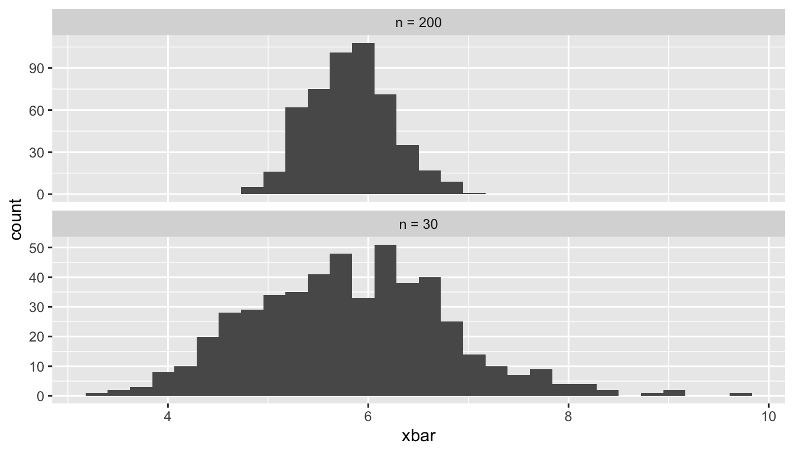
Sampling distribution for two samples
NoteEX7.25 — show question
EX7.25 (★★★) Sampling distribution for the difference of two means. Use volcanoes filtered to two regions of comparable size — e.g., region == "South America Volcanic Regions" vs. region == "Middle America-Caribbean Volcanic Regions". Take 1,000 paired samples of \(n = 30\) from each region and compute \(\bar{x}_{SA} - \bar{x}_{MCA}\) for each replicate. Plot the resulting histogram. (a) What does its center estimate? (b) How does its spread compare to the spread of either region’s sample-mean distribution alone?
Solution (reference: Section 7.5.1 “Sampling distribution for two samples — difference in sample means”).
set.seed(76)
sa <- volcanoes |> filter(region == "South America Volcanic Regions")
mca <- volcanoes |> filter(region == "Middle America-Caribbean Volcanic Regions")
reps <- 1000
draw_diff <- function() {
mean(sample(sa$elevation, 30, replace = TRUE), na.rm = TRUE) -
mean(sample(mca$elevation, 30, replace = TRUE), na.rm = TRUE)
}
diffs <- replicate(reps, draw_diff())
ggplot(data.frame(diff = diffs), aes(x = diff)) +
geom_histogram(bins = 30) +
geom_vline(xintercept = mean(sa$elevation, na.rm = TRUE) -
mean(mca$elevation, na.rm = TRUE),
color = "red", linetype = 2) +
labs(x = "Sample mean elevation: South America − Mexico/C. America")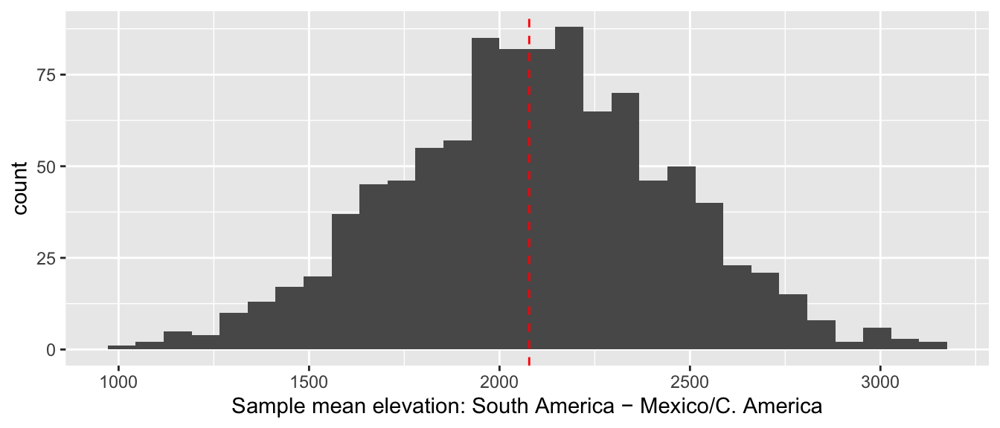
(a) Center. The histogram’s center estimates the population difference \(\mu_{SA} - \mu_{MCA}\) — the fixed truth your simulation is hovering around. (The red dashed line marks that population value.)
(b) Spread. The variance of a difference of independent sample means equals the sum of the individual variances:
\[\text{Var}(\bar{x}_{SA} - \bar{x}_{MCA}) = \tfrac{\sigma_{SA}^2}{n} + \tfrac{\sigma_{MCA}^2}{n}\]
so the SE of the difference is larger than either single-region SE — typically by a factor of \(\sqrt{2}\) when the two region SDs are comparable. Combining two independent estimators adds noise; the CLT still applies, so the histogram is approximately normal.
Critical thinking and synthesis
NoteEX7.26 — show question
EX7.26 (★★★) Suppose your sampling design systematically over-represents large volcanoes (e.g., only sampling those tall enough to be famous). Will the sampling distribution still center on \(\mu\)? Use the chapter’s terminology to explain.
Solution (reference: Section 7.2 “Sampling framework”, representative samples).
No — over-sampling tall volcanoes systematically pushes \(\bar{x}\) above \(\mu\). This is bias from non-representative sampling, distinct from random sampling variation. No amount of replication fixes a biased procedure.
NoteEX7.27 — show question
EX7.27 (★★★) Distinguish the standard deviation (a property of the population) from the standard error (a property of an estimator). Use one Olympic-volcano-themed example each.
Solution (reference: Section 7.4.4 “Sampling variation: standard deviation and standard error”, terminology).
SD = “spread of individuals in the population.” Example: SD of volcano elevations = how spread-out individual volcano altitudes are. SE = “spread of an estimator over hypothetical resamples.” Example: SE of \(\bar{x}\) for \(n = 30\) = how much the sample mean would vary if we redrew the sample many times.
NoteEX7.28 — show question
EX7.28 (★★★) A friend reports “I only need 30 observations because of the CLT — that always works, right?” Critique this in 2–3 sentences. When does \(n = 30\) fail?
Solution (reference: Section 7.4 “The Central Limit Theorem”, scope of CLT).
The CLT requires enough sample size relative to the population’s skewness. For symmetric populations \(n = 5\) may suffice; for highly skewed populations or rare-event proportions, \(n = 30\) is far too small. Always verify with a sampling-distribution simulation when in doubt.
NoteEX7.29 — show question
EX7.29 (★★★) The CLT says SE shrinks like \(\sigma/\sqrt{n}\). To halve SE, by what factor must \(n\) grow? What does this imply for cost-benefit of bigger samples?
Solution (reference: Section 7.4.4 “Sampling variation: standard deviation and standard error”, \(1/\sqrt{n}\) scaling).
Halving SE requires \(n\) to quadruple (\(\sqrt{4} = 2\)). Doubling SE precision quadruples sampling cost — diminishing returns.
NoteEX7.30 — show question
EX7.30 (★★★) Why is the number of replicates (reps = 1000) different in nature from the sample size (\(n\))? Which one would you increase to make the histogram smoother vs. the SE smaller?
Solution (reference: Section 7.1.3 “Virtual sampling”, reps vs n).
Increasing reps smooths the histogram of the sampling distribution but does not change the SE — the SE is a property of the population and \(n\). Increasing n narrows the sampling distribution itself (smaller SE), regardless of how many replicates we use.
NoteEX7.31 — show question
EX7.31 (★★★) Sample 30 volcanoes without replacement (the rep_slice_sample() default) vs with replacement. For a population of ~1,200 and \(n = 30\), do the sampling distributions differ much? Why?
Solution (reference: Section 7.1.3 “Virtual sampling”, finite-population correction).
With \(N \approx 1{,}200\) and \(n = 30\) (\(n / N \approx 2.5\%\)), the difference between with-replacement and without-replacement sampling is negligible. The finite-population correction \(\sqrt{(N-n)/(N-1)}\) is only ~0.987.
set.seed(76)
sd_wo <- volcanoes |>
rep_slice_sample(n = 30, reps = 1000, replace = FALSE) |>
group_by(replicate) |> summarize(xbar = mean(elevation, na.rm = TRUE), .groups = "drop")
sd_wr <- volcanoes |>
rep_slice_sample(n = 30, reps = 1000, replace = TRUE) |>
group_by(replicate) |> summarize(xbar = mean(elevation, na.rm = TRUE), .groups = "drop")
c(SE_without_repl = sd(sd_wo$xbar), SE_with_repl = sd(sd_wr$xbar))SE_without_repl SE_with_repl
300.0952 300.4402
NoteEX7.32 — show question
EX7.32 (★★★) Build a chart that summarizes the whole story of the chapter in your own words — population, single sample, sampling distribution, CLT — using volcano elevations.
Solution (reference: Chapter 7 — synthesis).
Answers vary. A 4-panel figure: (1) population histogram with \(\mu\) marked; (2) one sample’s histogram; (3) sampling distribution with \(\mu\) marked; (4) SE-vs-\(n\) on log-log.
ggplot(samp_dist_30, aes(x = xbar)) +
geom_histogram(bins = 30, fill = "steelblue") +
geom_vline(xintercept = mu, color = "red", linewidth = 1) +
labs(title = "Sampling distribution centers on μ — that's the CLT",
x = expression(bar(x)), y = NULL)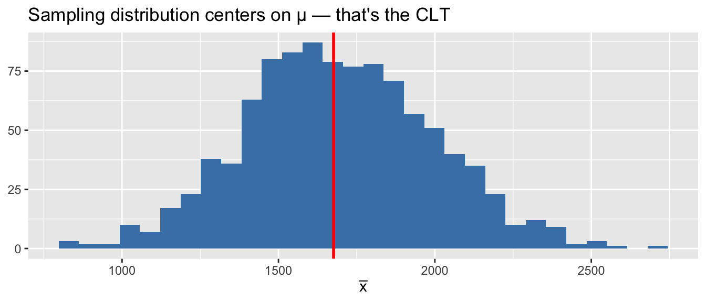
NoteEX7.33 — show question
EX7.33 (★★★) Build a sampling distribution for the median elevation (not the mean) at \(n = 30\). Is the median’s sampling distribution also approximately normal?
Solution (reference: Section 7.4 “The Central Limit Theorem”, non-mean estimators).
The median’s sampling distribution is also approximately normal under regularity conditions, but with a larger SE than the mean (typically by a factor ≈ 1.25 for normal-ish populations).
set.seed(76)
samp_med <- volcanoes |>
rep_slice_sample(n = 30, reps = 1000) |>
group_by(replicate) |>
summarize(med = median(elevation, na.rm = TRUE), .groups = "drop")
ggplot(samp_med, aes(x = med)) + geom_histogram(bins = 25)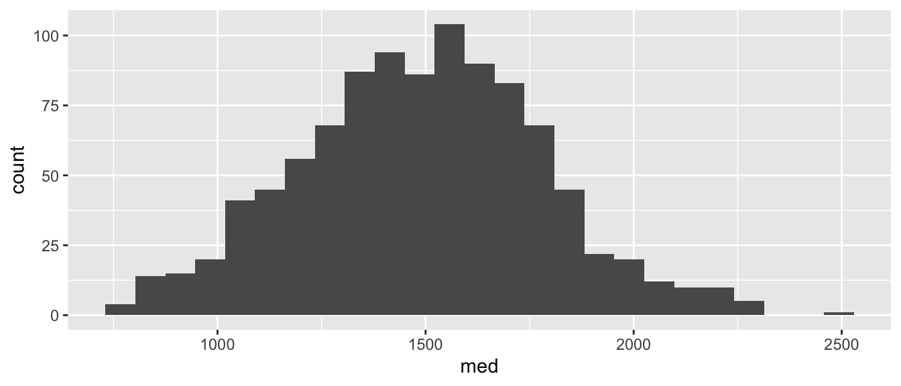
sd(samp_med$med)[1] 292.5839
NoteEX7.34 — show question
EX7.34 (★★★) Open exploration: pick a numerical variable in volcanoes, eruptions, or planets, build its sampling distribution, and write a 2-sentence finding (population skewness, simulated SE, comparison to theoretical SE).
Solution (reference: Chapter 7 — synthesis).
Answers vary. Example: “For eruptions$vei, the population is heavily right-skewed, but the sampling distribution of \(\bar{x}\) at \(n = 50\) is bell-shaped with simulated SE ≈ theoretical \(\sigma/\sqrt{n}\) — the CLT works even on a count variable.”
c(theoretical_SE = sd(eruptions$vei, na.rm = TRUE) / sqrt(50),
simulated_SE = sd(samp_vei$xbar))theoretical_SE simulated_SE
0.1643229 0.1626475